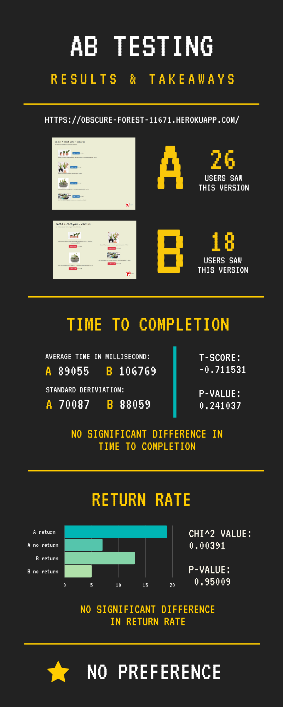

A/B testing is a process of comparing two versions of a product and measuring the difference in performance. In this assignment, I created a second version of a provided catcus shop website, performed an A/B test with 44 users of various backgrounds, and analyzed the difference in performance (i.e. time to completion and return rate) of the two versions.
Below is the link and the screenshots of the two versions of my website: baseline(A) and variant(B). I created the second version(B) with a goal of better performance.
Version A
Version B
I ran statistical tests on these two metrics: Time to Completion and Return Rate.
I measured the time each user uses for ordering cacti. Since our hypothesis is that the variant(B) design will improve user experience, i.e., decreasing the time users spend on the website, below are the null and alternative hypotheses.
Null hypothesis: Both versions of the website will have the same ordering time.
Alternative hypothesis: The variant(B) version of the website will decrease the amount of time needed to complete the order.
I measured the number of users who revisit the ordering page after they checkout. Since our hypothesis is that the variant(B) design will improve user experience, we can assume that users are more likely to return to the ordering page if they visit version B. Therefore, null and alternative hypotheses for the return rate are below.
Null hypothesis: Both versions of the website will have the same return rate.
Alternative hypothesis: The variant(B) version of the website will increase the return rate.
For this A/B test, I asked people, both in the UIUX class and outside the class, to perform the task of filling the cart with at least $150 of catci/succelents. Thus, there was a wide range of users — from teenagers to middle-aged people, those with programming knowledge to non-CS concentrators, and people interested in cacti to those who do not. After two days of data collection, 44 people used the website. 26 of them saw version A, while the other 18 saw version B.
Below is the infographic describing the results and conclusions from each statistical test.
The results do not show any statistical significance, possibly because
Since there is no statistical difference between these two designs, we cannot draw any conclusion about design principle without having more data.
This A/B testing assignment focuses on building up our understanding of the statistics behind A/B testing comparison. In other words, while we are responsible for implementing all statistical functions, the stencil of the website, including how to show one version and how to collect all clicking data, are already given. If I have an opportunity to work on A/B testing again, I would like to learn how to implement the website for the test. Also, I would love to try A/B testing on a larger scale, i.e., more sample size, and use more metrics, such as click-through rate and conversion rate, to analyze the difference in performance.